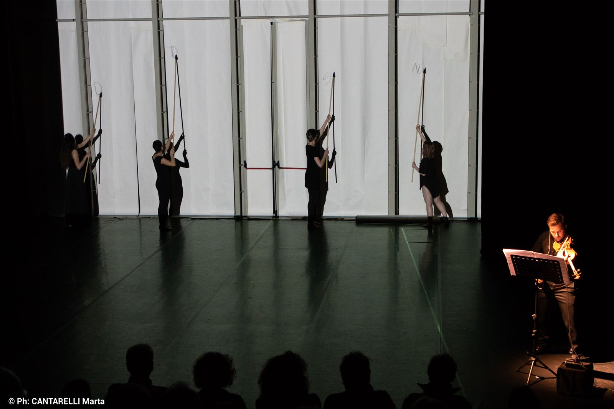
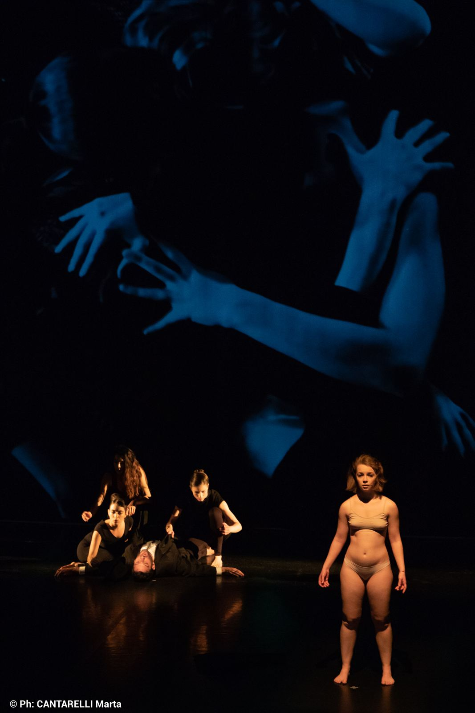
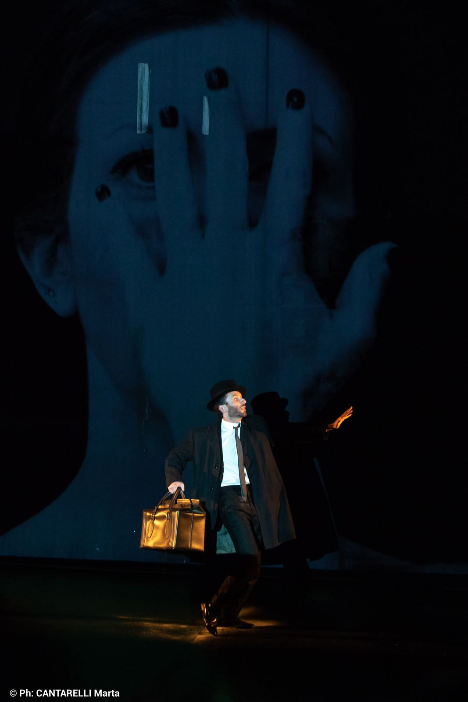
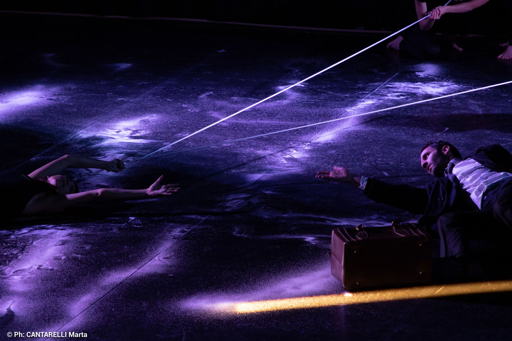
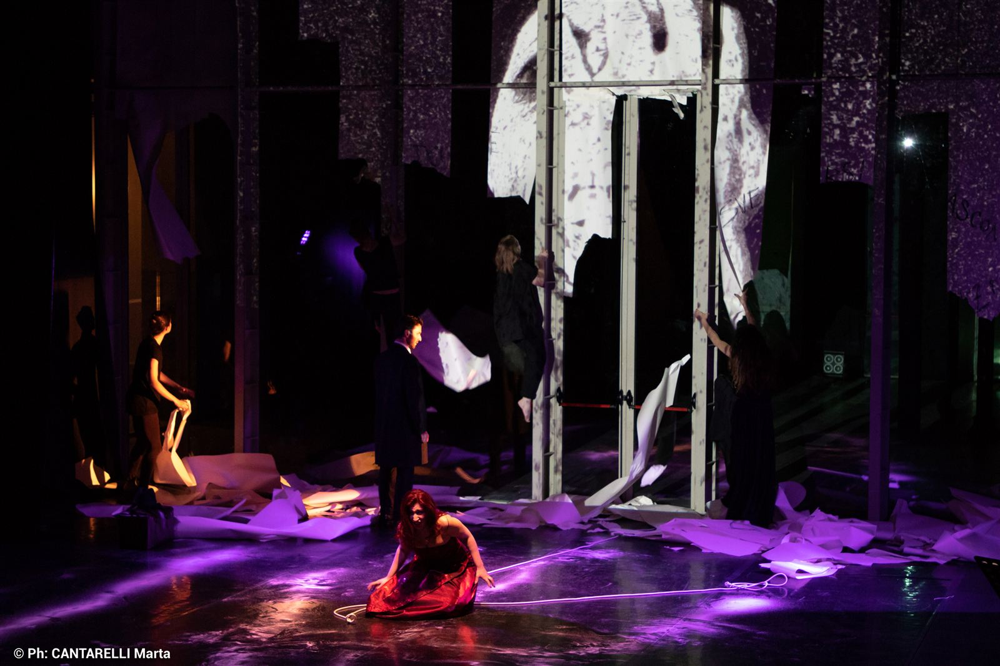
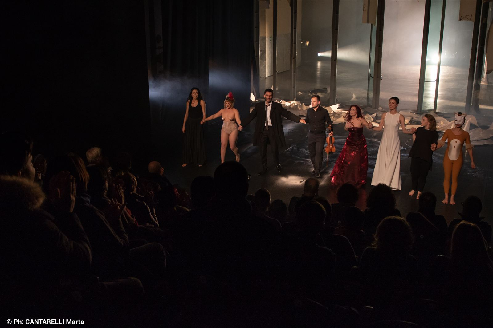
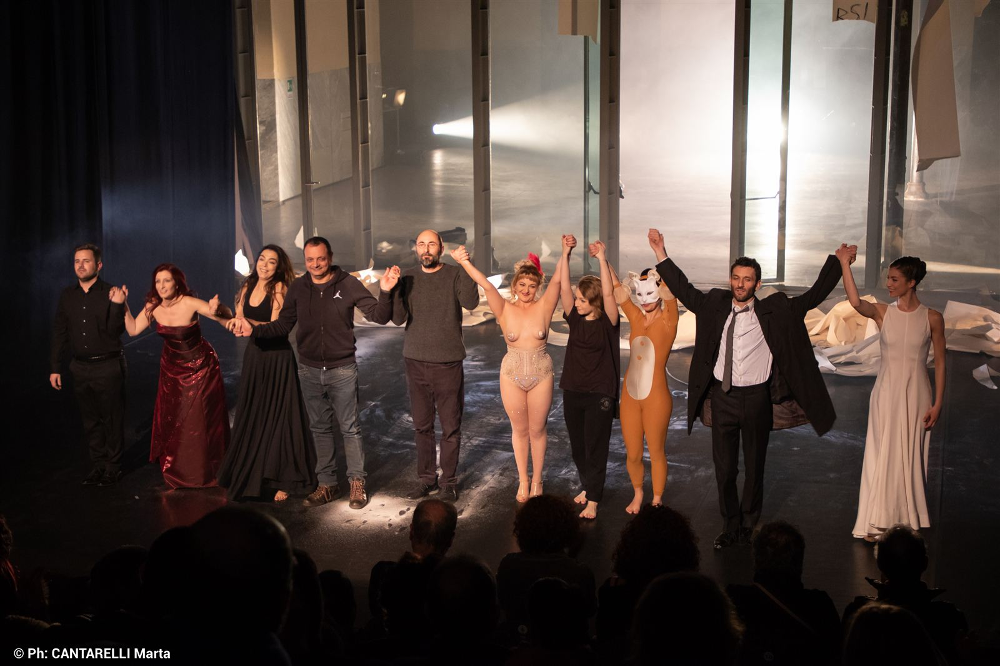

Frammenti su György Kurtág, compositore ungherese vivente. Tempo Reale Firenze, regia Lorusso, scene Cristian Taraborrelli. Kafka-Fragmente op.24 e Marginalia: la musica come chiosa minima al testo.
Fragments on György Kurtág, living Hungarian composer. Tempo Reale Florence, direction Lorusso.
Fragments sur György Kurtág, compositeur hongrois vivant.
Per il 55° Festival di Nuova Consonanza, Cristian Taraborrelli firma la regia e le scene di Fra(m)menti, un progetto di teatro musicale che intreccia le composizioni di György Kurtág e Giulia Lorusso in uno spazio scenico essenziale e poetico, dove il silenzio e il vuoto hanno la stessa importanza della musica. Le proiezioni video di Fabio Massimo Iaquone creano un dialogo tra suono e immagine, tra frammento e totalità.
For the 55th Festival di Nuova Consonanza, Cristian Taraborrelli directed and designed Fra(m)menti, a music theatre project weaving together compositions by György Kurtág and Giulia Lorusso in an essential and poetic scenic space, where silence and emptiness hold the same importance as music. Fabio Massimo Iaquone’s video projections create a dialogue between sound and image, between fragment and totality.
Pour le 55ème Festival di Nuova Consonanza, Cristian Taraborrelli signe la mise en scène et les décors de Fra(m)menti, un projet de théâtre musical qui entrelace les compositions de György Kurtág et Giulia Lorusso dans un espace scénique essentiel et poétique, où le silence et le vide ont la même importance que la musique. Les projections vidéo de Fabio Massimo Iaquone créent un dialogue entre son et image, entre fragment et totalité.
Gallery








Video
Rassegna Stampa
« È una musica intima dove le note aprono un varco nelle nostre emozioni creando nuove connessioni. I frammenti si espandono. Musica e parole corrono a tempo e fuori tempo. Azioni che si ripetono, corpi che raccontano, fasci luminosi che scandiscono come lancette. La musica genera una matrice video frammentata che prende vita, si anima. Le immagini trasformano la scena in uno spazio sensoriale senza limiti, dove il canto si espande e si appropria dei nostri corpi digitali. » « It is an intimate music where the notes open a passage into our emotions, creating new connections. The fragments expand. Music and words run in time and out of time. Actions that repeat, bodies that narrate, beams of light that mark time like clock hands. The music generates a fragmented video matrix that comes to life, animates. The images transform the stage into a boundless sensory space, where song expands and appropriates our digital bodies. » « C’est une musique intime où les notes ouvrent une brèche dans nos émotions, créant de nouvelles connexions. Les fragments s’expansent. Musique et paroles courent en rythme et hors rythme. Des actions qui se répètent, des corps qui racontent, des faisceaux lumineux qui scandent comme des aiguilles. La musique génère une matrice vidéo fragmentée qui prend vie, s’anime. Les images transforment la scène en un espace sensoriel sans limites, où le chant s’expand et s’empare de nos corps numériques. »
— FRA(M)MENTI · 17 dicembre 2018
L'Estetica del Frammento
Il titolo — Fra(m)menti — gioca su una soglia tipografica: tra la frammentazione della materia sonora e la mente che la riceve, tra ciò che è spezzato e ciò che pensa. Tutta la poetica di György Kurtág vive in questa tensione: pezzi che durano talvolta pochi secondi, in cui la concentrazione massima della materia musicale produce un'energia che le forme estese non potrebbero sostenere.
Per Kurtág il frammento non è rovina, né bozzetto incompiuto: è opera totale in miniatura. Eredità di Webern, di certo Schumann, della tradizione aforistica mitteleuropea che da Lichtenberg arriva a Cioran. Ogni microbrano — nei suoi cicli celebri come i Kafka-Fragmente o Játékok — è un mondo chiuso, autosufficiente, dove silenzio e suono pesano lo stesso.
La regia di Taraborrelli accetta questa sfida senza addomesticarla. Lo spettacolo non cerca di cucire i frammenti in una narrazione lineare, ma li lascia deflagrare nel buio del Mattatoio come schegge luminose, ognuna con la propria gravità. È un teatro dell'attenzione: lo spettatore impara di nuovo ad ascoltare il poco, a riconoscere che un gesto di pochi secondi può contenere la stessa densità emotiva di un'aria pucciniana.
The title — Fra(m)menti — plays on a typographic threshold: between the fragmentation of sonic matter and the mind that receives it, between what is broken and what thinks. The whole poetics of György Kurtág lives in this tension: pieces sometimes lasting only a few seconds, in which the maximum concentration of musical matter produces an energy that extended forms could not sustain.
For Kurtág the fragment is neither ruin nor unfinished sketch: it is a total work in miniature. The legacy of Webern, of certain Schumann, of the Central European aphoristic tradition that runs from Lichtenberg to Cioran. Each micro-piece — in his celebrated cycles such as Kafka-Fragmente or Játékok — is a closed, self-sufficient world, where silence and sound weigh the same.
Taraborrelli's direction accepts this challenge without taming it. The show does not try to stitch the fragments into a linear narrative, but lets them detonate in the darkness of the Mattatoio like splinters of light, each with its own gravity. It is a theatre of attention: the spectator learns again to listen to the small, to recognize that a gesture of a few seconds can hold the same emotional density as a Puccini aria.
Le titre — Fra(m)menti — joue sur un seuil typographique : entre la fragmentation de la matière sonore et l'esprit qui la reçoit, entre ce qui est brisé et ce qui pense. Toute la poétique de György Kurtág vit dans cette tension : des pièces qui durent parfois quelques secondes, où la concentration maximale de la matière musicale produit une énergie que les formes étendues ne sauraient soutenir.
Pour Kurtág, le fragment n'est ni ruine ni esquisse inachevée : il est œuvre totale en miniature. Héritage de Webern, d'un certain Schumann, de la tradition aphoristique d'Europe centrale qui de Lichtenberg parvient à Cioran. Chaque micro-pièce — dans ses cycles célèbres comme les Kafka-Fragmente ou Játékok — est un monde clos, autosuffisant, où silence et son pèsent également.
La mise en scène de Taraborrelli accepte ce défi sans le domestiquer. Le spectacle ne cherche pas à coudre les fragments en un récit linéaire, mais les laisse exploser dans l'obscurité du Mattatoio comme des éclats lumineux, chacun avec sa propre gravité. C'est un théâtre de l'attention : le spectateur apprend à nouveau à écouter le peu, à reconnaître qu'un geste de quelques secondes peut contenir la même densité émotionnelle qu'un air pucinien.
Il Dispositivo Scenico
Tradurre la frammentazione kurtágiana in spazio significa rinunciare alla scenografia come decoro. Taraborrelli costruisce per il Mattatoio un dispositivo essenziale: pochi elementi mobili, materiali poveri trattati come preziosi, lame di luce che attraversano il nero come bisturi. Lo spazio non è rappresentazione di un luogo, è partitura visiva in dialogo con la partitura musicale.
Il vuoto è protagonista. Come il silenzio di Kurtág, il nero del palco non è assenza ma materia attiva, in cui ogni corpo, ogni oggetto pesa il doppio. La soprano Ljuba Bergamelli e il violinista Lorenzo Gentili-Tedeschi non sono inquadrati da una scena: sono la scena, modulati da fasci di luce che scandiscono il tempo come lancette di un orologio sospeso.
Le proiezioni video di Fabio Massimo Iaquone aggiungono un terzo livello: una matrice digitale frammentata che non illustra ma amplifica, trasformando il volume industriale della Pelanda in uno spazio sensoriale senza confini precisi. Il risultato è un teatro dell'essenziale in cui la firma stilistica di Taraborrelli — modularità, contrasto materico, video come architettura di luce — trova un punto di massima sottrazione.
Translating Kurtág's fragmentation into space means giving up scenography as decoration. For the Mattatoio, Taraborrelli builds an essential device: a few mobile elements, poor materials treated as precious, blades of light cutting through the black like scalpels. The space is not the representation of a place, it is a visual score in dialogue with the musical score.
Emptiness is the protagonist. Like Kurtág's silence, the black of the stage is not absence but active matter, in which every body, every object weighs twice as much. Soprano Ljuba Bergamelli and violinist Lorenzo Gentili-Tedeschi are not framed by a set: they are the set, modulated by beams of light marking time like the hands of a suspended clock.
Fabio Massimo Iaquone's video projections add a third layer: a fragmented digital matrix that does not illustrate but amplifies, transforming the industrial volume of La Pelanda into a sensory space without precise boundaries. The result is a theatre of the essential in which Taraborrelli's signature — modularity, material contrast, video as architecture of light — finds its maximum point of subtraction.
Traduire la fragmentation kurtágienne en espace signifie renoncer à la scénographie comme décor. Taraborrelli construit pour le Mattatoio un dispositif essentiel : quelques éléments mobiles, des matériaux pauvres traités comme précieux, des lames de lumière qui traversent le noir comme des scalpels. L'espace n'est pas la représentation d'un lieu, c'est une partition visuelle en dialogue avec la partition musicale.
Le vide est protagoniste. Comme le silence de Kurtág, le noir du plateau n'est pas absence mais matière active, dans lequel chaque corps, chaque objet pèse le double. La soprano Ljuba Bergamelli et le violoniste Lorenzo Gentili-Tedeschi ne sont pas encadrés par un décor : ils sont le décor, modulés par des faisceaux de lumière qui scandent le temps comme les aiguilles d'une horloge suspendue.
Les projections vidéo de Fabio Massimo Iaquone ajoutent un troisième niveau : une matrice numérique fragmentée qui n'illustre pas mais amplifie, transformant le volume industriel de La Pelanda en un espace sensoriel sans frontières précises. Le résultat est un théâtre de l'essentiel où la signature de Taraborrelli — modularité, contraste de matières, vidéo comme architecture de lumière — trouve son point de soustraction maximale.
Le Composizioni — Due voci, una soglia
Lo spettacolo si articola attorno a due opere in dialogo:
Kafka-Fragmente, op. 24 (1985-1987) di György Kurtág — ciclo monumentale di quaranta brevissimi brani per soprano e violino, su frammenti di prose, lettere e diari di Franz Kafka. Una delle opere più radicali della musica del Novecento: durata totale di un'ora, ma fatta di micro-pezzi che durano talvolta pochi secondi.
Marginalia di Giulia Lorusso — nuova composizione in prima esecuzione assoluta, scritta per lo stesso organico (soprano e violino) e pensata in dialogo con Kurtág. Un titolo che è anche programma: il margine come luogo del pensiero, l'annotazione come gesto creativo.
The performance unfolds around two works in dialogue:
Kafka-Fragmente, op. 24 (1985-1987) by György Kurtág — a monumental cycle of forty very brief pieces for soprano and violin, on fragments of Franz Kafka's prose, letters and diaries. One of the most radical works of twentieth-century music: an hour-long total duration made of micro-pieces sometimes lasting only seconds.
Marginalia by Giulia Lorusso — new composition in world premiere, written for the same forces (soprano and violin) and conceived in dialogue with Kurtág. A title that is also a programme: the margin as the place of thought, the annotation as creative gesture.
Le spectacle s'articule autour de deux œuvres en dialogue :
Kafka-Fragmente, op. 24 (1985-1987) de György Kurtág — cycle monumental de quarante pièces très brèves pour soprano et violon, sur des fragments de proses, lettres et journaux de Franz Kafka. L'une des œuvres les plus radicales de la musique du XXe siècle : une heure de durée totale, faite de micro-pièces durant parfois quelques secondes.
Marginalia de Giulia Lorusso — nouvelle composition en création mondiale, écrite pour le même effectif (soprano et violon) et conçue en dialogue avec Kurtág. Un titre qui est aussi un programme : la marge comme lieu de la pensée, l'annotation comme geste créatif.
Il Workshop — Corpo, telefono cellulare e frammento
Tra il 26 novembre e il 18 dicembre 2018, in parallelo alla preparazione dello spettacolo, Cristian Taraborrelli conduce al Mattatoio un workshop intensivo dal titolo programmatico: Corpo, telefono cellulare e frammento. Non una semplice masterclass, ma un dispositivo di ricerca: gli allievi entreranno in scena la sera del debutto come parte integrante della drammaturgia.
Lo smartphone — oggetto domestico per eccellenza, frammento luminoso che ognuno porta in tasca — diventa qui dispositivo scenico: sorgente di luce mobile, schermo che frammenta lo sguardo, microfono che amplifica il respiro, fotocamera che restituisce il dettaglio. Il telefono è trattato come protesi del corpo, non come oggetto d'uso: nelle mani degli allievi-performer, scandisce il tempo della partitura kurtágiana esattamente come le lame di luce scandiscono lo spazio.
È una scelta drammaturgica che anticipa di anni un dibattito ancora aperto nel teatro contemporaneo: come integrare la tecnologia personale del pubblico nella scena, senza farne né gimmick né spettacolarizzazione. La risposta di Taraborrelli — insieme al video di Iaquone e alle voci sulla scena — è una tecnologia povera messa al servizio del frammento: il digitale non come piattaforma ma come materia minima, esattamente come Kurtág fa con il suono.
Between 26 November and 18 December 2018, in parallel with the show's preparation, Cristian Taraborrelli ran an intensive workshop at the Mattatoio under a programmatic title: Body, Mobile Phone and Fragment. Not a simple masterclass but a research device: the workshop participants would enter the stage on opening night as an integral part of the dramaturgy.
The smartphone — the domestic object par excellence, a luminous fragment that everyone carries in their pocket — becomes here a scenic device: mobile light source, screen that fragments the gaze, microphone that amplifies the breath, camera that returns the detail. The phone is treated as a prosthesis of the body, not as an object of use: in the hands of the workshop-performers, it punctuates the time of Kurtág's score exactly as the blades of light punctuate the space.
It is a dramaturgical choice that anticipates by years a debate still open in contemporary theatre: how to integrate the audience's personal technology into the scene, without turning it into gimmick or spectacle. Taraborrelli's answer — together with Iaquone's video and the voices on stage — is a poor technology placed at the service of the fragment: the digital not as platform but as minimal matter, exactly as Kurtág does with sound.
Entre le 26 novembre et le 18 décembre 2018, en parallèle à la préparation du spectacle, Cristian Taraborrelli conduit au Mattatoio un atelier intensif au titre programmatique : Corps, téléphone portable et fragment. Non pas une simple masterclass mais un dispositif de recherche : les participants entreront en scène le soir de la première comme partie intégrante de la dramaturgie.
Le smartphone — objet domestique par excellence, fragment lumineux que chacun porte en poche — devient ici dispositif scénique : source de lumière mobile, écran qui fragmente le regard, microphone qui amplifie le souffle, caméra qui restitue le détail. Le téléphone est traité comme prothèse du corps, non comme objet d'usage : dans les mains des stagiaires-performers, il scande le temps de la partition kurtágienne exactement comme les lames de lumière scandent l'espace.
C'est un choix dramaturgique qui anticipe de quelques années un débat encore ouvert dans le théâtre contemporain : comment intégrer la technologie personnelle du public à la scène, sans en faire ni gimmick ni spectacle. La réponse de Taraborrelli — aux côtés de la vidéo d'Iaquone et des voix sur scène — est une technologie pauvre mise au service du fragment : le numérique non comme plateforme mais comme matière minimale, exactement comme Kurtág le fait avec le son.
György Kurtág — Il compositore del silenzio
Nato il 19 febbraio 1926 a Lugoj (allora Romania, oggi al confine ungaro-romeno), György Kurtág si forma all'Accademia Liszt di Budapest insieme al compagno di studi György Ligeti. Nel 1957 si trasferisce a Parigi: studia con Olivier Messiaen e Darius Milhaud, ma soprattutto entra in analisi con la psicologa Marianne Stein, che lo libera dal blocco creativo invitandolo a comporre «due note per volta». Da quell'incontro nasce l'Op. 1 (Quartetto per archi, 1959) e con esso un'intera estetica.
Allievo spirituale di Béla Bartók, fondatore con Ligeti della cosiddetta «scuola ungherese» del secondo Novecento, Kurtág costruisce un catalogo di rara concentrazione: i Kafka-Fragmente per soprano e violino (1985-86), i diari pianistici Játékok («Giochi»), gli Officium breve, le Stele. Vincitore del prestigioso premio Sonning (Danimarca, 2014) e del Leone d'Oro alla Biennale Musica.
Vive da decenni in semi-reclusione a Budapest con la moglie Márta Kurtág (anche lei pianista, scomparsa nel 2019), con cui ha eseguito a quattro mani per tutta la vita. Nel novembre 2018 — pochi giorni prima del debutto romano di Fra(m)menti — il Teatro alla Scala presenta in prima mondiale la sua unica opera lirica, Fin de partie, da Beckett: a 92 anni, una vita di silenzio fa il suo ingresso nel teatro più chiacchierato del mondo.
Born on 19 February 1926 in Lugoj (then Romania, today on the Hungarian-Romanian border), György Kurtág trained at the Liszt Academy of Budapest alongside fellow student György Ligeti. In 1957 he moved to Paris: he studied with Olivier Messiaen and Darius Milhaud, but above all he entered analysis with the psychologist Marianne Stein, who freed him from creative block by inviting him to compose «two notes at a time». From that encounter were born Op. 1 (String Quartet, 1959) and with it an entire aesthetic.
A spiritual disciple of Béla Bartók, co-founder with Ligeti of the so-called «Hungarian school» of the late twentieth century, Kurtág built a catalogue of rare concentration: the Kafka-Fragmente for soprano and violin (1985-86), the pianistic diaries Játékok («Games»), the Officium breve, the Stele. Winner of the prestigious Sonning Prize (Denmark, 2014) and the Golden Lion at the Venice Biennale Musica.
For decades he has lived in semi-reclusion in Budapest with his wife Márta Kurtág (herself a pianist, who passed away in 2019), with whom he performed four-hand piano all his life. In November 2018 — a few days before the Roman premiere of Fra(m)menti — Teatro alla Scala presented the world premiere of his only opera, Fin de partie, from Beckett: at 92, a lifetime of silence enters the most talked-about theatre in the world.
Né le 19 février 1926 à Lugoj (alors en Roumanie, aujourd'hui à la frontière hungaro-roumaine), György Kurtág se forme à l'Académie Liszt de Budapest aux côtés de son condisciple György Ligeti. En 1957 il s'installe à Paris : il étudie avec Olivier Messiaen et Darius Milhaud, mais surtout entre en analyse avec la psychologue Marianne Stein, qui le libère du blocage créatif en l'invitant à composer «deux notes à la fois». De cette rencontre naissent l'Op. 1 (Quatuor à cordes, 1959) et avec lui toute une esthétique.
Disciple spirituel de Béla Bartók, cofondateur avec Ligeti de la « école hongroise » de la fin du XXe siècle, Kurtág construit un catalogue d'une rare concentration : les Kafka-Fragmente pour soprano et violon (1985-86), les journaux pianistiques Játékok (« Jeux »), les Officium breve, les Stele. Lauréat du prestigieux prix Sonning (Danemark, 2014) et du Lion d'Or de la Biennale Musica.
Il vit depuis des décennies en semi-réclusion à Budapest avec sa femme Márta Kurtág (elle aussi pianiste, décédée en 2019), avec qui il a joué à quatre mains toute sa vie. En novembre 2018 — quelques jours avant la première romaine de Fra(m)menti — la Scala présente en création mondiale son unique opéra, Fin de partie, d'après Beckett : à 92 ans, une vie de silence entre dans le théâtre le plus commenté du monde.
Giulia Lorusso — La voce italiana
Compositrice italiana della generazione più recente, Giulia Lorusso costruisce un percorso che intreccia scrittura strumentale, elettronica e ricerca sul gesto vocale. Formatasi al Conservatorio «Giuseppe Verdi» di Milano e all'IRCAM di Parigi — il laboratorio fondato da Pierre Boulez al Centre Pompidou — Lorusso lavora sul confine tra suono acustico e materia digitale, sull'ascolto come architettura.
In Fra(m)menti, le sue composizioni dialogano con quelle di Kurtág non per imitazione ma per affinità di temperatura: anche per lei il frammento è metodo, anche per lei il silenzio è struttura. La sua scrittura vocale — affidata alla soprano Ljuba Bergamelli, interprete di riferimento del repertorio contemporaneo italiano — cerca un canto che sia parola, respiro, fisicità del corpo che vibra.
An Italian composer of the most recent generation, Giulia Lorusso has built a path that interweaves instrumental writing, electronics and research on the vocal gesture. Trained at the «Giuseppe Verdi» Conservatory of Milan and at IRCAM in Paris — the laboratory founded by Pierre Boulez at the Centre Pompidou — Lorusso works on the border between acoustic sound and digital matter, on listening as architecture.
In Fra(m)menti, her compositions dialogue with Kurtág's not by imitation but by affinity of temperature: for her too the fragment is method, for her too silence is structure. Her vocal writing — entrusted to soprano Ljuba Bergamelli, a reference performer of the Italian contemporary repertoire — seeks a singing that is word, breath, the physicality of a vibrating body.
Compositrice italienne de la génération la plus récente, Giulia Lorusso construit un parcours qui entrelace écriture instrumentale, électronique et recherche sur le geste vocal. Formée au Conservatoire « Giuseppe Verdi » de Milan et à l'IRCAM de Paris — le laboratoire fondé par Pierre Boulez au Centre Pompidou — Lorusso travaille à la frontière entre son acoustique et matière numérique, sur l'écoute comme architecture.
Dans Fra(m)menti, ses compositions dialoguent avec celles de Kurtág non par imitation mais par affinité de température : pour elle aussi le fragment est méthode, pour elle aussi le silence est structure. Son écriture vocale — confiée à la soprano Ljuba Bergamelli, interprète de référence du répertoire contemporain italien — cherche un chant qui soit parole, souffle, physicité du corps qui vibre.
Fabio Massimo Iaquone — Il pioniere del Digital Versatile Theatre
Nato ad Atina nel 1962, Fabio Massimo Iaquone si forma al Centro Sperimentale di Cinematografia di Roma, dove si diploma in Direzione della Fotografia nel 1985. È tra i primi in Italia a portare il video dentro il teatro non come accessorio scenografico ma come materia drammaturgica: dalla sua ricerca nasce il concept di DVT — Digital Versatile Theatre, una metodologia che ridisegna lo spazio scenico attraverso l'immagine elettronica.
Le sue collaborazioni internazionali sono quelle che definiscono il canone del teatro contemporaneo. Con Robert Wilson firma le video scenografie di Relative Light (2001) e di Prometeo (2000-2001), produzione che attraversa Maubeuge, Valencia, Roma e Atene. Con le sorelle Katia e Marielle Labèque — il duo pianistico tra i più importanti al mondo — ha sviluppato progetti tra cui Across the Universe of Languages, riscrittura dei Beatles con la band B for Bang, e l'installazione Miko, costruita sulle musiche dell'album Unspoken.
A queste si affianca un sodalizio ventennale con il regista Giorgio Barberio Corsetti — America, Doctor Faustus, L'Histoire du soldat, The Tempest — che lo ha visto attraversare la grande tradizione del teatro di ricerca italiano. In Fra(m)menti, Iaquone porta questa eredità: non un video che illustra, ma un'immagine elettronica che respira con la materia sonora di Kurtág e Lorusso, sulla stessa soglia tra suono e silenzio.
Born in Atina in 1962, Fabio Massimo Iaquone trained at the Centro Sperimentale di Cinematografia in Rome, where he graduated in Cinematography in 1985. He is among the first in Italy to bring video into the theatre not as a scenographic accessory but as dramaturgical matter: from his research comes the concept of DVT — Digital Versatile Theatre, a methodology that redesigns scenic space through electronic imagery.
His international collaborations define the canon of contemporary theatre. With Robert Wilson he signed the video scenographies of Relative Light (2001) and Prometeo (2000-2001), a production that travelled through Maubeuge, Valencia, Rome and Athens. With the sisters Katia and Marielle Labèque — one of the most important piano duos in the world — he has developed projects including Across the Universe of Languages, a rewriting of the Beatles with the band B for Bang, and the installation Miko, built on the music of the album Unspoken.
Alongside these stands a twenty-year partnership with director Giorgio Barberio Corsetti — America, Doctor Faustus, L'Histoire du soldat, The Tempest — which has placed him at the heart of the great tradition of Italian experimental theatre. In Fra(m)menti, Iaquone brings this lineage: not a video that illustrates, but an electronic image that breathes with the sonic matter of Kurtág and Lorusso, on the same threshold between sound and silence.
Né à Atina en 1962, Fabio Massimo Iaquone se forme au Centro Sperimentale di Cinematografia de Rome, où il obtient son diplôme de directeur de la photographie en 1985. Il est parmi les premiers en Italie à porter la vidéo dans le théâtre non comme accessoire scénographique mais comme matière dramaturgique : de sa recherche naît le concept de DVT — Digital Versatile Theatre, méthodologie qui redéssine l'espace scénique à travers l'image électronique.
Ses collaborations internationales définissent le canon du théâtre contemporain. Avec Robert Wilson il signe les scénographies vidéo de Relative Light (2001) et de Prometeo (2000-2001), production qui passe par Maubeuge, Valence, Rome et Athènes. Avec les sœurs Katia et Marielle Labèque — l'un des duos pianistiques les plus importants au monde — il a développé des projets parmi lesquels Across the Universe of Languages, réécriture des Beatles avec le groupe B for Bang, et l'installation Miko, construite sur les musiques de l'album Unspoken.
À cela s'ajoute un compagnonnage de vingt ans avec le metteur en scène Giorgio Barberio Corsetti — America, Doctor Faustus, L'Histoire du soldat, The Tempest — qui l'a placé au cœur de la grande tradition du théâtre expérimental italien. Dans Fra(m)menti, Iaquone porte cet héritage : non pas une vidéo qui illustre, mais une image électronique qui respire avec la matière sonore de Kurtág et Lorusso, sur le même seuil entre son et silence.
Nuova Consonanza — Sessant'anni di musica nuova a Roma
Fondata a Roma nel 1959 da un gruppo di compositori radicali — Franco Evangelisti, Domenico Guaccero, Egisto Macchi, Aldo Clementi, Mario Bertoncini — Nuova Consonanza nasce come associazione e officina creativa: gli stessi fondatori daranno vita, qualche anno dopo, al leggendario Gruppo di Improvvisazione Nuova Consonanza, primo ensemble europeo di improvvisazione strutturata, a cui collaborerà perfino Ennio Morricone.
Da oltre sessant'anni il suo Festival annuale — tra i più longevi d'Europa per la musica del Novecento e contemporanea — è il punto d'incontro romano tra ricerca compositiva, performance, sperimentazione interdisciplinare. Aver firmato il teatro musicale del 55° Festival significa entrare in una storia che inizia con la generazione di Petrassi e Maderna e attraversa intera la seconda metà del secolo.
Founded in Rome in 1959 by a group of radical composers — Franco Evangelisti, Domenico Guaccero, Egisto Macchi, Aldo Clementi, Mario Bertoncini — Nuova Consonanza was born as an association and creative workshop: the same founders would later give life to the legendary Gruppo di Improvvisazione Nuova Consonanza, Europe's first ensemble of structured improvisation, to which even Ennio Morricone would contribute.
For over sixty years its annual Festival — one of the longest-running in Europe for twentieth-century and contemporary music — has been the Roman meeting point between compositional research, performance, and interdisciplinary experimentation. Signing the music theatre of the 55th Festival means entering a history that begins with the generation of Petrassi and Maderna and runs across the entire second half of the century.
Fondée à Rome en 1959 par un groupe de compositeurs radicaux — Franco Evangelisti, Domenico Guaccero, Egisto Macchi, Aldo Clementi, Mario Bertoncini — Nuova Consonanza naît comme association et atelier créatif : les mêmes fondateurs donneront vie, quelques années plus tard, au légendaire Gruppo di Improvvisazione Nuova Consonanza, premier ensemble européen d'improvisation structurée, auquel collaborera même Ennio Morricone.
Depuis plus de soixante ans, son Festival annuel — l'un des plus anciens d'Europe pour la musique du XXe siècle et contemporaine — est le point de rencontre romain entre recherche compositionnelle, performance et expérimentation interdisciplinaire. Avoir signé le théâtre musical du 55e Festival signifie entrer dans une histoire qui commence avec la génération de Petrassi et Maderna et traverse toute la seconde moitié du siècle.
L'Ennio Morricone segreto — L'improvvisazione d'avanguardia a Roma
Esiste un Ennio Morricone che il pubblico del cinema non ha mai conosciuto. Dal 1965 al 1980 — per quindici anni, nello stesso decennio in cui scriveva le colonne sonore per Sergio Leone, per Bertolucci e per Bellocchio — Morricone è stato membro stabile del Gruppo di Improvvisazione Nuova Consonanza, costola operativa dell'Associazione. Suonava la tromba: musica atonale, aleatoria, vicina al rumore. L'altra metà del suo lavoro, quella che teneva lontana dalle interviste sul Premio Oscar.
Il Gruppo era stato fondato nel 1964 da Franco Evangelisti — allievo di Schoenberg, una delle voci più radicali dell'avanguardia europea — insieme a Egisto Macchi, Mario Bertoncini, Walter Branchi, John Heineman e l'americano Frederic Rzewski. Era il primo ensemble europeo di improvvisazione strutturata: niente partitura, ma regole di comportamento sonoro decise prima dell'esecuzione. Cage e Stockhausen erano la lingua quotidiana, le sale di prova un laboratorio dove la musica veniva pensata come azione prima che come oggetto.
Da quel laboratorio nascono dischi che oggi sono leggenda nel circuito dell'avanguardia: The Feed-Back (RCA, 1970) — firmato proprio dal Gruppo, con Morricone alla tromba e in regia — e i volumi della serie Improvvisazioni per Deutsche Grammophon Avant Garde. Sono le stesse texture — fiati distorti, percussioni metalliche, cluster di archi che si srotolano come nervi — che Morricone riverserà di soppiatto in Indagine su un cittadino al di sopra di ogni sospetto (1970) e in Cosa avete fatto a Solange? (1972). Il pubblico le ascoltava al cinema senza saperlo. Era avanguardia camuffata da colonna sonora.
Mettere in scena Kurtág per il 55° Festival di Nuova Consonanza, nel 2018, significa lavorare dentro questa storia — non sopra. Significa accettare che la casa abbia regole proprie: al frammento non si aggiunge nulla. Significa che la lezione di Morricone — quella vera, quella che non ha mai voluto firmare con il proprio nome di compositore di film — entra nelle scelte registiche di Taraborrelli per via indiretta, come una temperatura della stanza. La sottrazione, il rumore come materia, lo spazio come tempo: sono i gesti del Gruppo di Improvvisazione applicati al teatro.
There is an Ennio Morricone the cinema audience has never known. From 1965 to 1980 — for fifteen years, in the same decade in which he was writing the soundtracks for Sergio Leone, Bertolucci and Bellocchio — Morricone was a stable member of the Gruppo di Improvvisazione Nuova Consonanza, the operating wing of the Association. He played the trumpet: atonal music, aleatoric, close to noise. The other half of his work, the one he kept far from the Oscar interviews.
The Group had been founded in 1964 by Franco Evangelisti — a pupil of Schoenberg, one of the most radical voices of the European avant-garde — together with Egisto Macchi, Mario Bertoncini, Walter Branchi, John Heineman and the American Frederic Rzewski. It was the first European ensemble of structured improvisation: no score, but rules of sonic behaviour decided before execution. Cage and Stockhausen were the daily language; the rehearsal rooms a laboratory where music was thought of as action before object.
From that laboratory came records that are today legendary in the avant-garde circuit: The Feed-Back (RCA, 1970) — signed by the Group itself, with Morricone on trumpet and in studio direction — and the volumes of the Improvvisazioni series for Deutsche Grammophon Avant Garde. The same textures — distorted winds, metallic percussion, string clusters unrolling like nerves — that Morricone would later smuggle into Investigation of a Citizen Above Suspicion (1970) and What Have You Done to Solange? (1972). Audiences listened to them in the cinema without knowing. It was avant-garde disguised as soundtrack.
Staging Kurtág for the 55th Festival di Nuova Consonanza, in 2018, means working inside this history — not on top of it. It means accepting that the house has its own rules: nothing is added to the fragment. It means that Morricone's true lesson — the one he never wished to sign with his name as a film composer — enters Taraborrelli's directorial choices indirectly, like the temperature of the room. Subtraction, noise as matter, space as time: these are the gestures of the Gruppo di Improvvisazione applied to theatre.
Il existe un Ennio Morricone que le public du cinéma n'a jamais connu. De 1965 à 1980 — pendant quinze ans, dans la même décennie où il écrivait les bandes originales pour Sergio Leone, Bertolucci et Bellocchio — Morricone fut membre stable du Gruppo di Improvvisazione Nuova Consonanza, l'aile opérative de l'Association. Il jouait de la trompette : musique atonale, aléatoire, proche du bruit. L'autre moitié de son travail, celle qu'il tenait loin des interviews sur l'Oscar.
Le Groupe avait été fondé en 1964 par Franco Evangelisti — élève de Schoenberg, l'une des voix les plus radicales de l'avant-garde européenne — avec Egisto Macchi, Mario Bertoncini, Walter Branchi, John Heineman et l'Américain Frederic Rzewski. C'était le premier ensemble européen d'improvisation structurée : pas de partition, mais des règles de comportement sonore décidées avant l'exécution. Cage et Stockhausen étaient la langue quotidienne ; les salles de répétition un laboratoire où la musique était pensée comme action avant d'être objet.
De ce laboratoire sont sortis des disques aujourd'hui légendaires dans le circuit d'avant-garde : The Feed-Back (RCA, 1970) — signé par le Groupe lui-même, avec Morricone à la trompette et à la direction studio — et les volumes de la série Improvvisazioni pour Deutsche Grammophon Avant Garde. Les mêmes textures — vents distordus, percussions métalliques, clusters de cordes qui se déroulent comme des nerfs — que Morricone glissera ensuite dans Enquête sur un citoyen au-dessus de tout soupçon (1970) et Qu'avez-vous fait à Solange ? (1972). Le public les écoutait au cinéma sans le savoir. C'était de l'avant-garde déguisée en bande originale.
Mettre en scène Kurtág pour le 55e Festival de Nuova Consonanza, en 2018, signifie travailler à l'intérieur de cette histoire — non au-dessus d'elle. Cela signifie accepter que la maison ait ses propres règles : au fragment on n'ajoute rien. Cela signifie que la leçon de Morricone — la vraie, celle qu'il n'a jamais voulu signer avec son nom de compositeur de films — entre dans les choix de mise en scène de Taraborrelli par voie indirecte, comme la température de la salle. La soustraction, le bruit comme matière, l'espace comme temps : ce sont les gestes du Gruppo di Improvvisazione appliqués au théâtre.
Mattatoio La Pelanda — Memoria di un luogo
L'ex Mattatoio di Testaccio — oggi semplicemente Mattatoio — è uno dei capolavori dell'archeologia industriale italiana. Progettato dall'architetto Gioacchino Ersoch e costruito tra il 1888 e il 1891, fu all'epoca il più grande e moderno macello d'Europa: padiglioni in mattone faccia a vista, capriate in ferro, una città nella città ai piedi del Monte dei Cocci.
Dismesso nel 1975, riconvertito a partire dagli anni Duemila, oggi è gestito dall'Azienda Speciale Palaexpo e ospita due istituzioni: il Mattatoio propriamente detto e La Pelanda, il padiglione dove un tempo si effettuava la spelatura dei suini, ora sala di sperimentazione per le arti vive. La memoria del lavoro pesante si fa supporto per la ricerca contemporanea: in questo paradosso vive l'identità del luogo.
È il Testaccio di Pier Paolo Pasolini, che ne fece l'orizzonte fisico e morale di tanti suoi film e racconti; del Monte Testaccio costruito di anfore romane spezzate — un altro frammento, un'altra storia di scarto trasformato in archeologia. Mettere Kurtág qui, nel padiglione dei suini, è di per sé un atto drammaturgico: la materia minima della musica abita la materia massima del lavoro.
The former Slaughterhouse of Testaccio — today simply Mattatoio — is one of the masterpieces of Italian industrial archaeology. Designed by architect Gioacchino Ersoch and built between 1888 and 1891, it was at the time the largest and most modern abattoir in Europe: brick-faced pavilions, iron trusses, a city within the city at the foot of Monte dei Cocci.
Decommissioned in 1975, reconverted from the 2000s onwards, today it is managed by the Azienda Speciale Palaexpo and hosts two institutions: the Mattatoio proper and La Pelanda, the pavilion where pigs were once skinned, now an experimental hall for the live arts. The memory of heavy labour becomes the medium for contemporary research: in this paradox lives the identity of the place.
It is the Testaccio of Pier Paolo Pasolini, who made it the physical and moral horizon of many of his films and stories; of Monte Testaccio built of broken Roman amphorae — another fragment, another story of waste transformed into archaeology. Placing Kurtág here, in the pigs' pavilion, is in itself a dramaturgical act: the minimal matter of music inhabits the maximum matter of labour.
L'ancien Abattoir de Testaccio — aujourd'hui simplement Mattatoio — est l'un des chefs-d'œuvre de l'archéologie industrielle italienne. Conçu par l'architecte Gioacchino Ersoch et construit entre 1888 et 1891, il était à l'époque le plus grand et le plus moderne abattoir d'Europe : pavillons en briques apparentes, fermes en fer, une ville dans la ville au pied du Monte dei Cocci.
Désaffecté en 1975, reconverti à partir des années 2000, il est aujourd'hui géré par l'Azienda Speciale Palaexpo et abrite deux institutions : le Mattatoio proprement dit et La Pelanda, le pavillon où jadis on dépoilait les porcs, aujourd'hui salle d'expérimentation pour les arts vivants. La mémoire du travail lourd devient le support de la recherche contemporaine : dans ce paradoxe vit l'identité du lieu.
C'est le Testaccio de Pier Paolo Pasolini, qui en fit l'horizon physique et moral de nombre de ses films et récits ; du Monte Testaccio construit d'amphores romaines brisées — un autre fragment, une autre histoire de rebut transformé en archéologie. Placer Kurtág ici, dans le pavillon des porcs, est en soi un acte dramaturgique : la matière minimale de la musique habite la matière maximale du travail.
Archivio — Documentazione Nuova Consonanza
L'esecuzione di Marginalia di Giulia Lorusso, affidata al violinista Lorenzo Gentili-Tedeschi al Mattatoio La Pelanda di Roma il 18 dicembre 2018, è documentata nell'archivio fotografico dell'Associazione Nuova Consonanza con la segnatura 18.001.12.01 (cinque fototipi digitali, contesto: 55° Festival di Nuova Consonanza, «Fra(m)menti»).
Fonte: Archivio Nuova Consonanza — scheda 7573 (Viale Giuseppe Mazzini 134, Roma).
The performance of Marginalia by Giulia Lorusso, played by violinist Lorenzo Gentili-Tedeschi at Mattatoio La Pelanda in Rome on 18 December 2018, is documented in the photographic archive of the Nuova Consonanza Association under the reference 18.001.12.01 (five digital photographic units, context: 55th Festival di Nuova Consonanza, “Fra(m)menti”).
Source: Nuova Consonanza Archive — record 7573 (Viale Giuseppe Mazzini 134, Rome).
L'exécution de Marginalia de Giulia Lorusso, confiée au violoniste Lorenzo Gentili-Tedeschi au Mattatoio La Pelanda de Rome le 18 décembre 2018, est documentée dans les archives photographiques de l'Association Nuova Consonanza sous la cote 18.001.12.01 (cinq unités photographiques numériques, contexte : 55e Festival de Nuova Consonanza, « Fra(m)menti »).
Source : Archives Nuova Consonanza — fiche 7573 (Viale Giuseppe Mazzini 134, Rome).
Curiosità
«Due note alla volta». Negli anni Cinquanta, paralizzato da una crisi creativa a Parigi, Kurtág viene salvato dalla psicologa Marianne Stein con un esercizio quasi zen: comporre solo due note insieme, poi tre, poi quattro. Da quel metodo nasce un'estetica intera.
I compagni di scuola. Alla Liszt Academy di Budapest, Kurtág studia accanto a György Ligeti. I due rimarranno amici e «rivali poetici» per tutta la vita: Ligeti la deflagrazione del materiale, Kurtág la sua estrema concentrazione. Due polarità della stessa scuola.
Beckett alla Scala, dieci giorni prima. Il 15 novembre 2018, a 92 anni, Kurtág vede debuttare alla Scala Fin de partie, sua prima e unica opera lirica, su libretto tratto da Beckett. Trentatre giorni dopo, Fra(m)menti apre il Festival di Nuova Consonanza a Roma: due capitali italiane, lo stesso autore, due lingue diverse del frammento.
Pasolini e La ricotta. A pochi metri dal Mattatoio sorge il Monte Testaccio. Qui Pier Paolo Pasolini girò nel 1963 alcune scene di La ricotta, episodio di RoGoPaG: il sottoproletariato urbano come materia poetica. La memoria di quel cinema vive ancora nelle pareti della Pelanda.
Morricone e l'improvvisazione. Negli anni Sessanta, il Gruppo di Improvvisazione Nuova Consonanza riunì compositori d'avanguardia in performance senza partitura: tra loro c'era anche Ennio Morricone, che da quell'esperienza derivava intuizioni poi trasferite nelle sue celebri colonne sonore.
«Two notes at a time». In the 1950s, paralysed by a creative crisis in Paris, Kurtág was saved by psychologist Marianne Stein through an almost Zen exercise: compose only two notes together, then three, then four. From that method an entire aesthetic was born.
The classmates. At the Liszt Academy in Budapest, Kurtág studied alongside György Ligeti. The two would remain friends and «poetic rivals» for life: Ligeti the deflagration of material, Kurtág its extreme concentration. Two polarities of the same school.
Beckett at La Scala, ten days earlier. On 15 November 2018, at 92 years old, Kurtág saw the premiere at La Scala of Fin de partie, his first and only opera, on a libretto drawn from Beckett. Thirty-three days later, Fra(m)menti opened the Festival of Nuova Consonanza in Rome: two Italian capitals, the same author, two different languages of the fragment.
Pasolini and La ricotta. A few metres from the Mattatoio rises Monte Testaccio. Here Pier Paolo Pasolini shot, in 1963, some scenes of La ricotta, an episode of RoGoPaG: the urban sub-proletariat as poetic matter. The memory of that cinema still lives in the walls of La Pelanda.
Morricone and improvisation. In the 1960s, the Gruppo di Improvvisazione Nuova Consonanza brought avant-garde composers together in performances without a score: among them was Ennio Morricone, who derived from that experience intuitions later transferred into his celebrated soundtracks.
« Deux notes à la fois ». Dans les années 1950, paralysé par une crise créative à Paris, Kurtág est sauvé par la psychologue Marianne Stein grâce à un exercice presque zénuel : composer seulement deux notes ensemble, puis trois, puis quatre. De cette méthode naît toute une esthétique.
Les condisciples. À l'Académie Liszt de Budapest, Kurtág étudie aux côtés de György Ligeti. Les deux resteront amis et « rivaux poétiques » toute leur vie : Ligeti la déflagration du matériau, Kurtág sa concentration extrême. Deux polarités d'une même école.
Beckett à la Scala, dix jours avant. Le 15 novembre 2018, à 92 ans, Kurtág voit la création à la Scala de Fin de partie, son premier et unique opéra, sur un livret tiré de Beckett. Trente-trois jours plus tard, Fra(m)menti ouvre le Festival di Nuova Consonanza à Rome : deux capitales italiennes, le même auteur, deux langues différentes du fragment.
Pasolini et La ricotta. À quelques mètres du Mattatoio se dresse le Monte Testaccio. Ici Pier Paolo Pasolini tourna, en 1963, certaines scènes de La ricotta, épisode de RoGoPaG : le sous-prolétariat urbain comme matière poétique. La mémoire de ce cinéma vit encore dans les murs de La Pelanda.
Morricone et l'improvisation. Dans les années 1960, le Gruppo di Improvvisazione Nuova Consonanza réunit des compositeurs d'avant-garde dans des performances sans partition : parmi eux figurait aussi Ennio Morricone, qui tira de cette expérience des intuitions transférées ensuite dans ses célèbres bandes originales.
Creative Team
Lettura critica — La soglia del frammento
L'estetica del frammento è la firma del Novecento musicale. Anton Webern scrive le sue Bagatelle op. 9 nel 1913 e dichiara che vorrebbe esprimere un romanzo in un sospiro. Ottant'anni dopo György Kurtág porta questo principio al suo punto più estremo: i suoi Kafka-Fragmente op. 24 (1985-86) durano in media venti secondi ciascuno, e in venti secondi devono contenere un libro. Il frammento, qui, non è rovina o resto: è compressione assoluta del senso. La lezione di Beckett (l'ineffabile dichiarato attraverso la sua impossibilità) si fonde con quella di Bartók (la materia popolare ungherese ridotta al suo gesto minimo) per produrre un linguaggio in cui il silenzio ha lo stesso peso del suono.
Il programma Fra(m)menti del 55° Festival di Nuova Consonanza (Mattatoio La Pelanda, Roma 2018) accosta Kurtág a Giulia Lorusso, compositrice italiana della generazione seguente. Cristian Taraborrelli, chiamato come regista, deve costruire un dispositivo scenografico che non illustri la musica (sarebbe un tradimento del suo carattere essenziale) ma le offra una soglia visiva. La sua risposta è il rovesciamento dello statuto del concerto: non spettatori orientati verso un palco, ma corpi in attraversamento. La luce taglia, il telefono cellulare diventa lampada portatile, il pubblico si sposta tra postazioni sonore. Il frammento musicale non è più un'unità cronometrica: è un luogo dello spazio da cui si entra e da cui si esce.
La scelta del Mattatoio — ex macello industriale di Testaccio riconvertito a polo culturale — è coerente con il dispositivo. La memoria del luogo (la macellazione, l'archeologia industriale, il Testaccio operaio) entra nel concerto come una stratificazione tacita: i frammenti di Kurtág e di Lorusso parlano di una memoria del corpo, e il corpo collettivo di chi ascolta si trova dentro un edificio che è lui stesso un frammento di città. La regia di Cristian non spiega questo nesso: lo lascia operare. È il principio di tutta la sua poetica musicale — già sperimentato in Pagliacci AR al Carlo Felice, già intravisto in Don Carlos al Mariinsky — che la scenografia non sia commento ma condizione di ascolto.
Per il pubblico, l'esperienza è di un'austerità rara nel calendario italiano contemporaneo. Niente effetti, nessuna risonanza spettacolare: solo una composizione di silenzi, gesti minimi, parole di Kafka filtrate dalla voce della soprano. Eppure la presenza dei video di Iaquone — che nelle pagine del programma di sala 2018 vengono descritti come «dispositivi scénici che heightenanon il caractere onirico e visionario non solo di questa sequenza ma dell'intera produzione» — riesce a rendere il frammento visibile senza illustrarlo. Il risultato è uno dei pochi esempi italiani di music theatre che lavori veramente sulla soglia: la soglia tra silenzio e suono, tra parola e gesto, tra l'individuo che ascolta e il collettivo che attraversa.
The aesthetics of the fragment is the signature of twentieth-century music. Anton Webern wrote his Bagatelles op. 9 in 1913 and declared he would like to express a novel in a single sigh. Eighty years later György Kurtág takes this principle to its most extreme point: his Kafka-Fragmente op. 24 (1985-86) last on average twenty seconds each, and in twenty seconds must contain a book. The fragment, here, is not ruin or remainder: it is absolute compression of sense. Beckett's lesson (the ineffable declared through its impossibility) fuses with Bartók's (Hungarian popular matter reduced to its minimal gesture) to produce a language in which silence has the same weight as sound.
The Fra(m)menti programme of the 55th Festival di Nuova Consonanza (Mattatoio La Pelanda, Rome 2018) places Kurtág alongside Giulia Lorusso, a composer from the following Italian generation. Cristian Taraborrelli, called as director, must build a scenographic device that does not illustrate the music (which would betray its essential character) but offers it a visual threshold. His answer is the inversion of the concert's status: no spectators facing a stage, but bodies crossing. Light cuts, the mobile phone becomes a portable lamp, the audience moves between sonic stations. The musical fragment is no longer a chronometric unit: it is a place in space one enters and exits.
The choice of the Mattatoio — the former industrial slaughterhouse of Testaccio reconverted into a cultural hub — is coherent with the device. The memory of the place (slaughtering, industrial archaeology, working-class Testaccio) enters the concert as a tacit stratification: Kurtág and Lorusso's fragments speak of a memory of the body, and the collective body of the listener stands inside a building that is itself a fragment of city. Cristian's direction does not explain this connection: it lets it operate. It is the principle of his entire musical poetics — already tested in Pagliacci AR at Carlo Felice, already glimpsed in Don Carlos at the Mariinsky — that scenography is not commentary but condition of listening.
The result is one of the few Italian examples of music theatre that genuinely works on the threshold: the threshold between silence and sound, between word and gesture, between the individual who listens and the collective who crosses.
L'esthétique du fragment est la signature de la musique du XXe siècle. Webern écrit ses Bagatelles op. 9 en 1913 et déclare qu'il voudrait exprimer un roman dans un soupir. Quatre-vingts ans plus tard, Kurtág pousse ce principe à l'extrême : ses Kafka-Fragmente op. 24 (1985-86) durent en moyenne vingt secondes chacun, et en vingt secondes doivent contenir un livre.
Cristian Taraborrelli, mis en scène du programme Fra(m)menti au Mattatoio de Rome (2018), construit un dispositif scénographique qui n'illustre pas la musique mais lui offre un seuil visuel : pas de spectateurs face à un plateau, mais des corps qui traversent. Le fragment musical n'est plus une unité chronométrique : c'est un lieu de l'espace. La scénographie n'est pas commentaire, mais condition d'écoute.
Ascolti e Riferimenti
Per entrare nel mondo sonoro di Fra(m)menti, alcuni titoli essenziali del catalogo kurtágiano: i Kafka-Fragmente op. 24 (1985-86) per soprano e violino, vertice del rapporto tra parola, voce e linea strumentale; Játékok («Giochi»), il diario pianistico iniziato nel 1973 e mai concluso; Officium breve in memoriam Andreae Szervansky op. 28 (1988-89) per quartetto d'archi, omaggio webernianamente compresso; le ...quasi una fantasia... op. 27; e infine Fin de partie (Scala 2018), distillato di una vita.
Per il contesto romano: l'archivio di Nuova Consonanza (nuovaconsonanza.it) raccoglie sessant'anni di programmi di sala, registrazioni e documenti d'avanguardia. Per il luogo: il sito del Mattatoio (mattatoioroma.it), gestito da Azienda Speciale Palaexpo, racconta la riconversione di Testaccio in polo culturale.
To enter the sonic world of Fra(m)menti, some essential titles from Kurtág's catalogue: the Kafka-Fragmente op. 24 (1985-86) for soprano and violin, the apex of the relationship between word, voice and instrumental line; Játékok («Games»), the pianistic diary begun in 1973 and never concluded; Officium breve in memoriam Andreae Szervansky op. 28 (1988-89) for string quartet, a Webernianly compressed homage; the ...quasi una fantasia... op. 27; and finally Fin de partie (La Scala 2018), the distillate of a lifetime.
For the Roman context: the archive of Nuova Consonanza (nuovaconsonanza.it) gathers sixty years of programmes, recordings and avant-garde documents. For the venue: the website of Mattatoio (mattatoioroma.it), managed by Azienda Speciale Palaexpo, recounts the reconversion of Testaccio into a cultural hub.
Pour entrer dans le monde sonore de Fra(m)menti, quelques titres essentiels du catalogue kurtágien : les Kafka-Fragmente op. 24 (1985-86) pour soprano et violon, sommet du rapport entre parole, voix et ligne instrumentale ; Játékok (« Jeux »), le journal pianistique commencé en 1973 et jamais conclu ; Officium breve in memoriam Andreae Szervansky op. 28 (1988-89) pour quatuor à cordes, hommage compressé à la manière de Webern ; les ...quasi una fantasia... op. 27 ; et enfin Fin de partie (Scala 2018), distillat d'une vie.
Pour le contexte romain : l'archive de Nuova Consonanza (nuovaconsonanza.it) rassemble soixante ans de programmes, d'enregistrements et de documents d'avant-garde. Pour le lieu : le site du Mattatoio (mattatoioroma.it), géré par Azienda Speciale Palaexpo, raconte la reconversion de Testaccio en pôle culturel.
Apparato critico
«Si crede di esprimere un romanzo in un sospiro, una sinfonia in un grido. Concentrazione: questa è la regola.»
L'idea di Anton Webern sulle Bagatelle op. 9 (1913) è la radice mentale di tutta l'estetica del frammento novecentesco. Da Webern a Kurtág passa una linea retta di settant'anni: la riduzione assoluta come fedeltà alla materia, la concentrazione come opposto della sintesi.
«One believes one can express a novel in a sigh, a symphony in a cry. Concentration: this is the rule.»
Anton Webern's thought on the Bagatelles op. 9 (1913) is the mental root of the entire twentieth-century aesthetics of the fragment.
«On croit pouvoir exprimer un roman dans un soupir, une symphonie dans un cri. Concentration : voilà la règle.»
La pensée d'Anton Webern sur les Bagatelles op. 9 (1913) est la racine mentale de toute l'esthétique du fragment.
Anton Webern — sulle Bagatelle op. 9, 1913
«Schlage Deinen Mantel, hoher Träumer, über das Kind.» / «Stendi il tuo mantello, alto sognatore, sopra il bambino.»
Uno dei più brevi Kafka-Fragmente op. 24 (1985-86) di György Kurtág: nove parole tedesche, durata ventiquattro secondi. Un'intera esistenza condensata in un'invocazione. La compressione kurtágiana è alla base del dispositivo scenografico di Cristian Taraborrelli: ogni postazione del Mattatoio è un frammento di Kafka spazializzato.
«Schlage Deinen Mantel, hoher Träumer, über das Kind.» / «Spread your mantle, lofty dreamer, over the child.»
One of the briefest Kafka-Fragmente op. 24 (1985-86) by György Kurtág: nine German words, twenty-four-second duration.
«Étends ton manteau, haut rêveur, sur l'enfant.»
Un des plus brefs Kafka-Fragmente op. 24 de Kurtág (1985-86).
György Kurtág — Kafka-Fragmente op. 24, su testo di Franz Kafka, 1985-86
«Scrivere è sempre tradurre, e ogni traduzione è un'imperfezione fedele. Kafka in tedesco non è lo stesso Kafka in italiano. Kurtág lo sa, e fa della soglia tra le lingue il suo materiale.»
La riflessione è presente nei programmi di sala della Nuova Consonanza per il 55° Festival 2018 dedicato a Kurtág e a una nuova generazione di compositori italiani. Il dispositivo di Cristian Taraborrelli traduce questa idea sulla scena: i frammenti non sono mai indicativi («parla così») ma operativi (la luce taglia, il telefono illumina, il pubblico cammina).
«Writing is always translating, and every translation is a faithful imperfection. Kafka in German is not the same Kafka in Italian. Kurtág knows it, and makes the threshold between languages his material.»
«Écrire est toujours traduire, et toute traduction est une imperfection fidèle.»
Festival di Nuova Consonanza — programma di sala, 55° edizione, Roma 2018
«Premio Léonie Sonning 2020 a György Kurtág. Compositore-pensatore. Un'intera esistenza dedicata alla riduzione come gesto etico, alla parola di Kafka come materiale di ascolto, alla soglia tra suono e silenzio come spazio compositivo. La più importante distinzione musicale danese consacra una vita di concentrazione.»
«Léonie Sonning Music Prize 2020 to György Kurtág. Composer-thinker. A whole life devoted to reduction as an ethical gesture, to Kafka's word as listening material, to the threshold between sound and silence as compositional space.»
«Prix Léonie Sonning 2020 à György Kurtág.»
Léonie Sonning Music Foundation — motivazione del premio, Copenaghen 2020
Tags